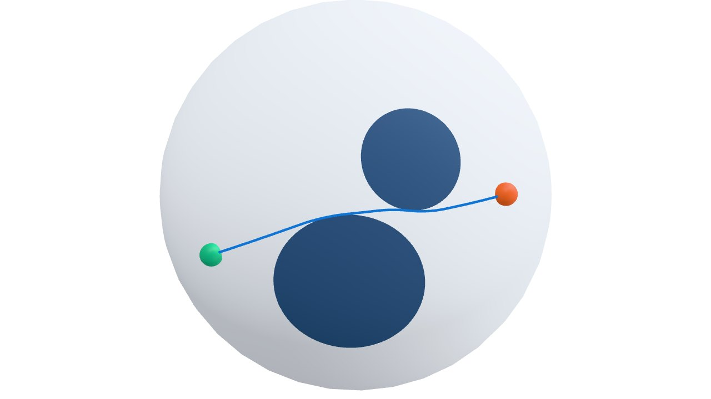

Planning#
geodex.plan() (geodex::planning::plan() in C++) turns a manifold, a validity
function, a start and a goal into a collision-free path that is short under the manifold’s
metric. It sets up the planning problem, runs the planner and smooths the result. The same
function plans on the sphere, on \(\mathrm{SE}(2)\) and in the joint space of an arm. This
page covers what plan does, its settings, and how an admissible heuristic focuses the
search.
A first plan#
The sphere below has two cap-shaped obstacles between the start and the goal. The validity
function returns True outside both caps, and plan searches for a path with 2000
iterations and seed 7.
import numpy as np
import geodex
sphere = geodex.Sphere()
def point(lon, lat):
"""The point of the unit sphere at a longitude and latitude in degrees."""
lon, lat = np.radians(lon), np.radians(lat)
return np.array([np.cos(lat) * np.cos(lon), np.cos(lat) * np.sin(lon), np.sin(lat)])
# Two caps are obstacles, each a center and an angular radius.
caps = [(point(-4, 6), np.radians(18)), (point(14, 36), np.radians(12))]
def is_valid(q):
return all(q @ center < np.cos(radius) for center, radius in caps)
start, goal = point(-40, 8), point(40, 22)
settings = geodex.PlanSettings(iterations=2000, seed=7)
result = geodex.plan(sphere, start, goal, is_valid, settings=settings)
print(f"solved={result.solved} cost={result.cost:.4f} waypoints={len(result.path)}")
Full example: examples/concepts/planning.py
#include <cmath>
#include <cstdio>
#include <utility>
#include <vector>
#include <geodex/geodex.hpp>
#include <geodex/planning/plan.hpp>
namespace gp = geodex::planning;
geodex::Sphere<> sphere;
// The point of the unit sphere at a longitude and latitude in degrees.
auto point = [](double lon, double lat) {
lon *= M_PI / 180.0;
lat *= M_PI / 180.0;
return Eigen::Vector3d(std::cos(lat) * std::cos(lon), std::cos(lat) * std::sin(lon),
std::sin(lat));
};
// Two caps are obstacles, each a center and an angular radius.
const std::vector<std::pair<Eigen::Vector3d, double>> caps = {
{point(-4, 6), 18.0 * (M_PI / 180.0)}, {point(14, 36), 12.0 * (M_PI / 180.0)}};
auto is_valid = [&caps](const Eigen::Vector3d& q) {
for (const auto& [center, radius] : caps) {
if (q.dot(center) >= std::cos(radius)) return false;
}
return true;
};
const Eigen::Vector3d start = point(-40, 8), goal = point(40, 22);
gp::PlanSettings settings;
settings.iterations = 2000;
settings.seed = 7;
auto result = gp::plan(sphere, start, goal, is_valid, settings);
std::printf("solved=%d cost=%.4f waypoints=%zu\n", result.solved, result.cost,
result.path.size());
Full example: examples/concepts/planning.cpp
It prints solved=True cost=1.3725 waypoints=77.

The path that plan returns passes between the two caps. Drag to orbit, and use the
controls to pause the ball or move it along the path.
result.path holds the smoothed path at evenly spaced waypoints. Draw it or hand it to a
controller as it is. result.raw_path holds the planner’s waypoints before smoothing.
raw = result.raw_path # planner waypoints, shape (n, 3)
path = result.path # smoothed, checked and evenly spaced waypoints, shape (m, 3)
print(f"raw waypoints={len(raw)} smoothed={result.smoothed} "
f"solve={result.time_ms:.1f} ms smooth={result.smooth_ms:.1f} ms")
Full example: examples/concepts/planning.py
const auto& raw = result.raw_path; // planner waypoints
const auto& path = result.path; // smoothed, checked and evenly spaced waypoints
std::printf("raw waypoints=%zu smoothed=%d solve=%.1f ms smooth=%.1f ms\n",
raw.size(), result.smoothed, result.time_ms, result.smooth_ms);
Full example: examples/concepts/planning.cpp
It prints raw waypoints=6 smoothed=True and the times of the search and of the smoother.
What plan does#
%%{init: {'theme':'base','themeVariables':{'primaryColor':'#e7f0fa','primaryTextColor':'#1a1a1a','primaryBorderColor':'#2980b9','lineColor':'#2980b9','secondaryColor':'#e7f0fa','tertiaryColor':'#f7fbfe','background':'transparent'}}}%%
flowchart LR
A["manifold<br/>start, goal"] --> B["state space<br/>and bounds"]
B --> C["validity and<br/>edge checks"]
C --> D["path length<br/>and heuristic"]
D --> E["G-RRT*"]
E --> F["planner's<br/>path"]
F --> G["smoother"]
G --> H["PlanResult"]
plan wraps the manifold in an OMPL state space. Its bounds are the manifold’s sampling
bounds, grown to hold the start and the goal. The planner takes its samples from the
manifold’s own sampler and checks every edge (see Edges and motion validators). The cost of
an edge is its length under the metric.
The planner is G-RRT* [1], an asymptotically optimal,
bidirectional variant of RRT*. It finds a first path, then keeps sampling to shorten it, and
uses a heuristic to sample only where a shorter path can pass (see
Heuristics and informed sampling). The search runs for iterations iterations when that
is set, and for time seconds otherwise.
The smoother then shortens the planner’s path, rounds its corners and checks the result
against the same validity function (see Path Smoothing). path holds the smoother’s output
when it passes the check, and the planner’s path otherwise.
Field |
Meaning |
|---|---|
|
|
|
The returned path as evenly spaced waypoints. |
|
The planner’s waypoints before smoothing. |
|
|
|
The length of |
|
Time of the search in milliseconds. |
|
Time of the smoother in milliseconds. |
|
Time until the search found its first path, and -1 when it found none. |
|
Iterations until the search found its first path, and 0 when it found none. |
|
Samples from the informed set, the samples from the greedy set included. |
|
Samples from the greedy set. |
|
Samples from the whole space, taken before the first path or when the informed set is empty. |
Settings#
Every field of geodex.PlanSettings (geodex::planning::PlanSettings
in C++) has a default that solves most problems.
settings = geodex.PlanSettings(
iterations=2000, # fixed budget, reproducible with a seed
seed=7, # seeds OMPL and the geodex samplers
time=1.0, # wall-clock budget, used when iterations is 0
planner=geodex.planners.GreedyRRTstar(range=0.0, greedy_ratio=0.9,
rewire_factor=1.1),
collision_check_resolution=0.01, # spacing of the validity samples along an edge
interp="base_geodesic", # the curve of the planner's edges
goal_tolerance=0.0,
smooth=True, # run the smoother on the planner's path
smoothing=geodex.PathSmoothingSettings(output_spacing=0.0),
)
result = geodex.plan(sphere, start, goal, is_valid, settings=settings)
Full example: examples/concepts/planning.py
gp::PlanSettings settings;
settings.iterations = 2000; // fixed budget, reproducible with a seed
settings.seed = 7; // seeds OMPL and the geodex samplers
settings.time = 1.0; // wall-clock budget, used when iterations is 0
settings.planner = gp::planners::GreedyRRTstar{
.range = 0.0, .greedy_ratio = 0.9, .rewire_factor = 1.1};
settings.collision_check_resolution =
0.01; // spacing of the validity samples along an edge
settings.interp =
gp::InterpolationMode::BaseGeodesic; // the curve of the planner's edges
settings.goal_tolerance = 0.0;
settings.smooth = true; // run the smoother on the planner's path
settings.smoothing.output_spacing = 0.0;
auto result = gp::plan(sphere, start, goal, is_valid, settings);
Full example: examples/concepts/planning.cpp
Field |
Default |
Meaning |
|---|---|---|
|
0 |
Number of planner iterations. A value above 0 replaces the time budget, and a plan with a fixed seed then returns the same path on every run. |
|
1.0 |
Planning time in seconds. The planner uses it when |
|
0 |
Time in seconds that the planner keeps improving the path after its first path,
within |
|
0 |
Seed of the plan. A fixed seed above 0 makes the plan reproducible, and 0 takes a new seed from the manifold’s sampler. See Reproducibility. |
|
|
The planner and its parameters (see the table below). |
|
0 |
Largest distance between two validity checks along an edge, in coordinates. 0 uses
OMPL’s default for the planner. The smoother then uses
|
|
|
The curve that joins two states. |
|
0 |
How close to the goal the path must end, as a distance on the manifold. When the start
is already this close, |
|
|
Lower and upper limits of the coordinates, such as joint limits. The planner and the smoother keep every state inside them. Without them, the plan uses the bounds that the manifold declares. |
|
|
Whether to smooth the planner’s path. |
|
|
Settings of the smoother (see Path Smoothing). |
geodex.planners.GreedyRRTstar takes these parameters.
Parameter |
Default |
Meaning |
|---|---|---|
|
0 |
Longest step that the tree grows toward a sample. 0 lets OMPL choose it from the size of the bounds. |
|
0.9 |
Probability that a sample comes from the greedy set (see Heuristics and informed sampling). |
|
1.1 |
Scale of the radius in which a new state looks for cheaper connections. |
|
|
Remove the tree states outside the greedy set when |
|
0 |
Largest number of neighbors that a new state connects to. 0 does not limit it. |
Heuristics and informed sampling#
After the first solution, G-RRT* samples only where a state can still improve the path. A state \(x\) can improve a solution of cost \(c\) only if the shortest path through it is shorter than \(c\). A heuristic \(h\) estimates the length of that path as \(h(x_s, x) + h(x, x_g)\). The heuristic must be admissible. An admissible heuristic does not overestimate the true metric distance. The informed set \(\{x : h(x_s, x) + h(x, x_g) \le c\}\) then contains every state that can improve the current solution, and the planner samples it directly [2]. geodex lowers the bound \(c\) to the heuristic length of the current path, the sum of \(h\) over its edges, when that is smaller.
G-RRT* also samples a smaller greedy set, the informed set whose bound is the largest
estimate \(h(x_s, v) + h(v, x_g)\) over the states \(v\) of the current path. This set
is the smallest informed set that still holds the current path. greedy_ratio is the
probability that a sample comes from the greedy set, 0.9 by default, and the other samples
come from the informed set.
For a constant metric \(G\), the chord length \(\sqrt{\Delta^\top G \Delta}\) is the exact distance. For a metric \(M(q)\) that changes over the space, geodex computes a constant matrix \(L\) with \(L \preceq M(q)\) everywhere in the bounds (a Loewner lower bound) [3]. Every path is at least as long under \(M\) as under \(L\). The chord length under \(L\) is then admissible, and the informed set is an ellipsoid the planner samples directly.
Space |
Default heuristic |
|---|---|
Built-in robot ( |
The Loewner bound of its mass matrix, computed once and included with the robot. |
\(\mathrm{SE}(2)\), \(\mathrm{SO}(2)\), the torus, and products of them |
A Loewner bound computed when |
Any other manifold |
The Euclidean chord, admissible for identity metrics and metrics with
\(M(q) \succeq I\). Pass |
precompute_matrix_lower_bound computes the bound of a custom metric, such as the kinetic
energy of an arm. Its lambda_min_certificate is the smallest eigenvalue of
\(L^{-1/2} M(q) L^{-1/2}\) it found over the box. converged is true when this value is
at least one within the tolerance, and the bound is then admissible.
Edges and motion validators#
An edge of the planner is valid when every state along it is valid. By default, plan
checks an edge with the validity function at points along its curve, no more than
collision_check_resolution apart. A motion validator replaces this check and decides a
whole edge at once. Pass one as motion_validator= in Python, or as the factory argument of
plan in C++, when an edge needs a check beyond the validity of its points.
geodex.DirectionalMotionValidator checks the points of an edge and also rejects the
edge when it drives backward by more than a budget, a limit that a Riemannian metric cannot
impose. See SE(2) Motion Planning for an example with a differential-drive robot.
The smoother checks its edges with the same validator, and with a directional validator, every edge of the returned path stays within the reverse budget.
The built-in robots take a collision scene in place of a validity function, as in
geodex.plan(robot, q0, q1, scene) (geodex::robots::plan in C++). Their motion validator
is VAMP’s edge check, and the plan uses the robot’s own heuristic. The smoother checks its
edges at points against the scene, with every obstacle grown by a small margin. See
Collision checking for what these checks guarantee along every edge.
See also#
Metrics as Robot Models for the metrics that define path length.
Path Smoothing for what happens to the raw path.
Reproducibility for seeds and budgets.
Minimum-Energy Planning on Configuration Manifolds and SE(2) Motion Planning for complete planning problems.